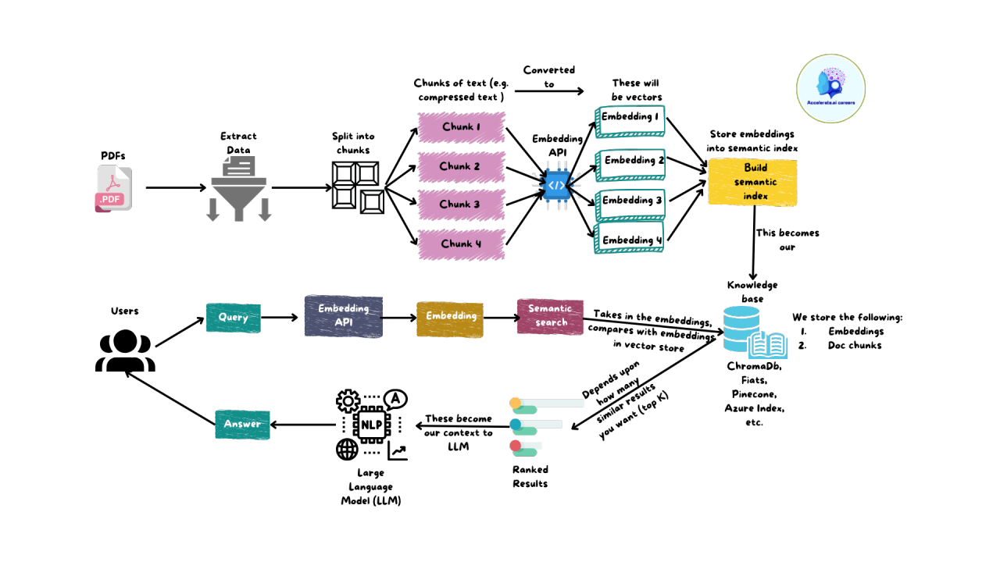

Module 10 — Modern & AI Data SystemsLecture 44Week 15
RAG Pipelines & LLM Integration
Retrieval-Augmented Generation: databases as the knowledge backbone for language models
Learning Objectives
Explain the hallucination problem in LLMs and why retrieval-augmented generation addresses it
Describe the two-phase RAG pipeline: offline indexing and online retrieval-generation
Design a chunking strategy for a given document corpus
Implement a minimal RAG pipeline using pgvector and the OpenAI API

Figure 44.1 — The RAG pipeline: documents are chunked, embedded, and stored in a vector database (offline); at query time, relevant chunks are retrieved and injected into the LLM prompt (online)
1. The Hallucination Problem
Large Language Models (LLMs) generate plausible-sounding text by predicting the next token given their training data. They are excellent at reasoning, summarization, and language tasks. However, they have a critical weakness: hallucination — generating confident but factually incorrect statements, especially for:
Events after the training cutoff date (knowledge staleness)
Proprietary or domain-specific documents the model was not trained on
Documents specific to a user's organization (internal reports, product manuals)
Retrieval-Augmented Generation (RAG)
RAG solves hallucination by grounding the LLM in retrieved facts. Instead of asking the model to recall from memory, we:
(1) Retrieve the relevant passages from a database at query time
(2) Inject those passages into the LLM prompt as context
(3) Generate an answer that is grounded in — and citable from — retrieved documents
The database acts as the model's external, up-to-date, domain-specific knowledge store.
2. The RAG Pipeline
Raw Documents
→
Chunking
→
Embedding Model
→
Vector Store
→
ANN Index
Offline (indexing phase — run once or on document update)
User Query
→
Embed Query
→
ANN Search
→
Top-k Chunks
→
LLM Prompt
→
Answer
Online (inference phase — runs per query)
3. Offline Phase: Indexing
3.1 Chunking
Documents must be split into chunks before embedding. Chunk size is a critical design decision — it trades precision against context:
Chunk Strategy
Size
Pros
Cons
Fixed-size (char)
200–500 chars
Simple; uniform size
May cut sentences mid-thought; context lost at boundary
Fixed-size (token)
128–512 tokens
Matches embedding model input
Splits at arbitrary points
Sentence-based
1–5 sentences
Semantically coherent units
Variable size; may be too short
Paragraph-based
1 paragraph
Natural document unit
Paragraphs vary widely in length
Semantic chunking
Variable
Groups semantically similar sentences
Requires embedding pass on all sentences; expensive
Recursive character
Variable
Splits on paragraphs, then sentences, then words
Complex to implement
Overlap to Preserve Context
When chunking by fixed size, add an overlap of 10–20% between consecutive chunks. A sentence split across two chunks is present in both, so neither loses the context of the boundary sentence. Common choice: chunk_size=512 tokens, overlap=64 tokens.
3.2 Embedding and Storage
Offline indexing (Python pseudocode):
from openai import OpenAI
import psycopg2
client = OpenAI()
# For each chunk in the document corpus:
for chunk_text in all_chunks:
# 1. Generate embedding
response = client.embeddings.create(
input=chunk_text,
model="text-embedding-3-small" # 1536 dims
)
embedding = response.data[0].embedding # list of 1536 floats
# 2. Store chunk + embedding in PostgreSQL (with pgvector)
cur.execute(
"INSERT INTO chunks (doc_id, text, embedding) VALUES (%s, %s, %s)",
(doc_id, chunk_text, embedding)
)
conn.commit()
4. Online Phase: Retrieval and Generation
4.1 Query Embedding and Retrieval
def retrieve(query: str, k: int = 5) -> list[str]:
# Embed the query using the same model
q_emb = client.embeddings.create(input=query, model="text-embedding-3-small")
.data[0].embedding
# Vector similarity search (cosine distance via pgvector)
cur.execute("""
SELECT text FROM chunks
ORDER BY embedding <=> %s::vector
LIMIT %s
""", (q_emb, k))
return [row[0] for row in cur.fetchall()]
4.2 Prompt Construction
def build_prompt(query: str, contexts: list[str]) -> str:
context_block = "\n\n---\n\n".join(contexts)
return f"""You are a helpful database assistant. Answer the question using ONLY the context below.
If the answer is not in the context, say "I don't know."
CONTEXT:
{context_block}
QUESTION: {query}
ANSWER:"""
4.3 Generation
def rag_query(query: str) -> str:
contexts = retrieve(query, k=5)
prompt = build_prompt(query, contexts)
response = client.chat.completions.create(
model="gpt-4o-mini",
messages=[{"role": "user", "content": prompt}],
temperature=0.2 # low temperature → more factual
)
return response.choices[0].message.content
# Usage
answer = rag_query("What is the fan-out of a B+ tree of order 4?")
5. Advanced RAG Techniques
5.1 Hybrid Search
Pure vector search can miss keyword-specific queries (e.g., searching for "ARIES" retrieves semantically related documents but may miss the exact algorithm name). Hybrid search combines:
Scores are fused using Reciprocal Rank Fusion (RRF): rank each result set separately, then sum 1/(k+rank) across both rankers. Documents that appear high in both lists get the highest combined score.
5.2 Re-Ranking
After retrieving top-k candidates, apply a cross-encoder re-ranker (a model that jointly encodes query+passage to produce a relevance score). Cross-encoders are more accurate than bi-encoders (used for initial retrieval) but too slow to run over all documents. Apply only to the top 20–50 retrieved candidates.
5.3 Metadata Filtering
-- Retrieve only chunks from documents tagged as "module_8"
SELECT text FROM chunks
WHERE metadata->>'module' = 'module_8'
ORDER BY embedding <=> %s::vector
LIMIT 5;
5.4 Parent-Child Chunking
Store small child chunks (for precise retrieval) but return their parent chunk (larger context window) to the LLM. The child chunk's high specificity improves recall; the parent's broader context improves generation quality.
6. RAG vs. Fine-Tuning
RAG
Fine-Tuning
Knowledge update
Add documents to vector store — instant
Retrain model — expensive (hours/days)
Cost
Low — vector store + embedding API
High — GPU training time + compute
Hallucination
Grounded in retrieved documents
Model may still hallucinate
Reasoning style
Keeps base model reasoning; grounded answers
Model adopts new style/behavior
Best for
Private documents, frequently changing knowledge
Domain-specific language, tone, formatting
RAG Failure Modes
Bad chunks: chunks too small lose context; chunks too large dilute relevance signals. Retrieval miss: the relevant passage is not retrieved (poor recall) — increase k or use hybrid search. Faithfulness failure: the LLM ignores the retrieved context and hallucinates anyway — lower temperature, use strict prompting, check with a faithfulness evaluator. Irrelevant context: retrieved passages confuse rather than help — improve retrieval quality, add metadata filters, use a re-ranker.
7. The Database Engineer's Role in AI Systems
RAG makes database skills more important, not less, in the age of AI:
Schema design: modeling documents, metadata, and vector columns correctly
Index tuning: choosing HNSW vs. IVF, setting M and ef for the recall-latency trade-off
Hybrid retrieval: combining vector and full-text indexes for best recall
Data pipelines: building reliable ingestion pipelines that chunk, embed, and upsert documents at scale
Observability: tracking retrieval latency, recall metrics, and generation quality in production
8. Summary
LLMs hallucinate on private/recent knowledge — RAG grounds generation in retrieved facts
Offline phase: chunk documents → embed → store in vector database with ANN index
Online phase: embed query → ANN search → top-k chunks → inject into LLM prompt
Chunking strategy (size, overlap) and retrieval quality (k, hybrid search) are the primary RAG quality levers
pgvector + PostgreSQL enables RAG without a dedicated vector database for moderate scale